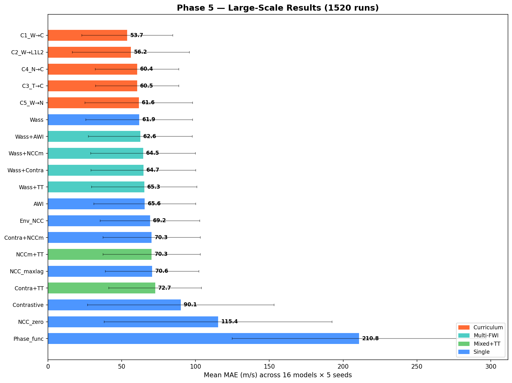
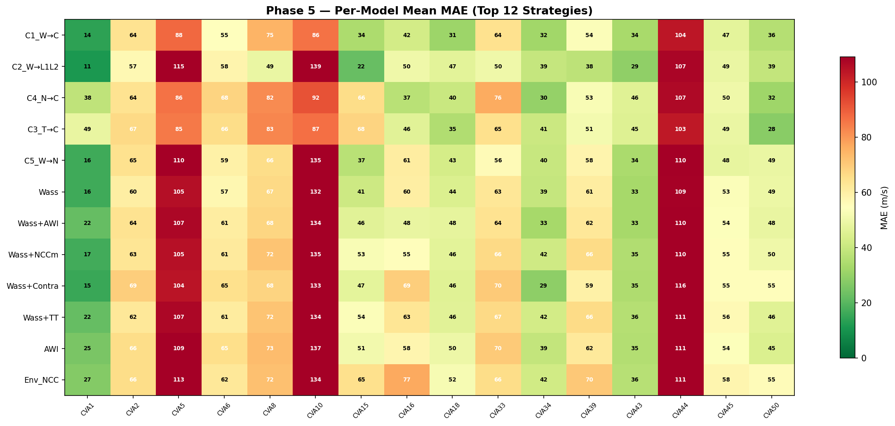
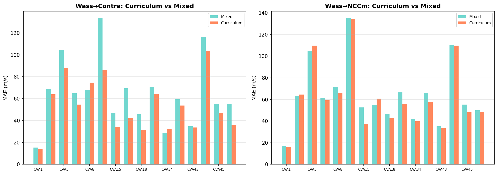
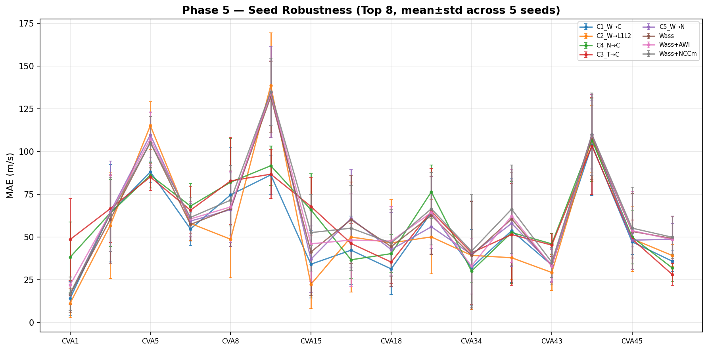

信息来源: 所有 reward 函数的文献来源和设计原理均来自 Wenzhe 撰写的
phase4_reward_design_report.md（导师文献综述）。
| 特性 | GRPO | DAPO | GDPO (当前) |
|---|---|---|---|
| 全称 | Group Relative Policy Optimization | Decoupled Advantage PPO | Group Decoupled Policy Optimization |
| 文献 | Schulman et al. 2017 (PPO); Shariatmadar et al. (DeepWaveRL) | Schulman et al. 2017 (PPO, arXiv:1707.06347) | Dong et al., 2025 arXiv:2601.05242 |
| 阶段 | Phase 0-I | Phase I 后期 | Phase II-V |
$R_g$: 第 $g$ 个采样的 scalar reward。$\mu_G, \sigma_G$: 组内 $G=32$ 个采样的均值和标准差。
局限: 多个 reward 分量需事先手动融合为单一标量。
每个 reward 分量 $R_i$ 独立全局标准化（减均值除标准差），然后加权求和。
改进: 解耦了多 reward 分量，但标准化粒度是全局的，丢失了组内相对排序信息。
每个 reward 分量 $R_i$ 在组内 $G$ 个采样上独立标准化，然后加权求和，最后 batch 全局标准化。
核心优势: 保留组内"哪个采样更好"的相对信号。即使 Wasserstein ($\sim -5000$) 和 Contrastive ($\sim 0.5$) 量级差 $10^4$ 倍，GDPO 自动处理。

| Rank | Strategy | Type | Mean MAE | Std |
|---|---|---|---|---|
| 1 | C1 Wass→Contrastive | Curriculum | 53.7 | 30.8 |
| 2 | C2 Wass→L1+L2 | Curriculum | 56.2 | 39.7 |
| 3 | C4 NCCm→Contrastive | Curriculum | 60.4 | 28.3 |
| 4 | C3 TT→Contrastive | Curriculum | 60.5 | 28.2 |
| 5 | C5 Wass→NCCm | Curriculum | 61.6 | 36.4 |
| 6 | Wass | Single | 61.9 | 36.1 |
| 7 | Wass+AWI | Multi-FWI | 62.6 | 35.2 |
| 8 | Wass+NCCm | Multi-FWI | 64.5 | 35.4 |
| 9 | Wass+Contra | Multi-FWI | 64.7 | 35.5 |
| 10 | Wass+TT | Mixed+TT | 65.3 | 35.7 |
| 11 | AWI | Single | 65.6 | 34.5 |
| 12 | Env_NCC | Single | 69.2 | 33.7 |
| 13 | NCC_maxlag | Single | 70.6 | 31.7 |
| 14 | NCCm+TT | Mixed+TT | 70.3 | 32.9 |
| 15 | Contra+NCCm | Multi-FWI | 70.3 | 33.0 |
| 16 | Contra+TT | Mixed+TT | 72.7 | 31.4 |
| 17 | Contrastive | Single | 90.1 | 63.2 |
| 18 | NCC_zero | Single | 115.4 | 77.2 |
| 19 | Phase_func | Single | 210.8 | 86.0 |



| Parameter | Value |
|---|---|
| Policy | 4×4 B-spline, Gaussian policy, 32 params |
| Geometry | Transmission, 5 sources × 70 receivers |
| Models | 16 CVA (1,2,5,6,8,10,15,16,18,33,34,39,43,44,45,50) |
| Seeds | 42, 123, 456, 789, 101112 |
| Training | G=32, PPO epochs=4, lr=5e-3, 5000 steps |
| Temperature | 2.0→0.1 (anneal 1000), entropy=0.02 |
Per-group sum over all time samples, shots, receivers. 对振幅误差和 cycle-skipping 敏感。
This is a simplified 1D CDF-based W₁, not the full Kantorovich OT. Uses abs() for non-negativity and L1 of CDF differences. See Section 8 for the standard Métivier W₂ formulation.
Hilbert envelope → NCC. Produces artificial low frequencies for background velocity recovery.
Wiener matching filter time-spread penalty. If velocity correct, w ≈ δ(t).
Implemented correctly per specification but fundamentally fails (mean 210.8). Amplitude normalization destroys essential physical information.
STA/LTA energy-ratio picker, GPU-batched PyTorch implementation.
| W₁ (CDF, existing) | W₂ (Quantile, new) | |
|---|---|---|
| Non-negativity | $|d[t]|$ (absolute) | $d[t]^2 + \eta$ (squared + baseline, Métivier) |
| Distance | $W_1 = \sum|\Delta\mathrm{CDF}|$ (L1) | $W_2^2 = \mathrm{mean}(|\Delta F^{-1}|^2)$ (L2) |
| Fidelity to Métivier 2016 | Simplified | Exact formula match |
| Status | Complete | 16 models × 5 seeds running |
| File | Changes |
|---|---|
agents/fwi_rewards.py | Rewrote Wasserstein, fixed hilbert_envelope, added NCC/AWI/Phase_func/W₂ (530 lines) |
agents/rl_objectives.py | Added fwi2 to RewardWeights + gdpo_advantage |
train_rl_fwi.py | Added --fwi_type2, multi-FWI mixing, reward hacking detection |
Phase 5 Complete Report · Generated 2026-06-02 · Sherlock & Wenzhe